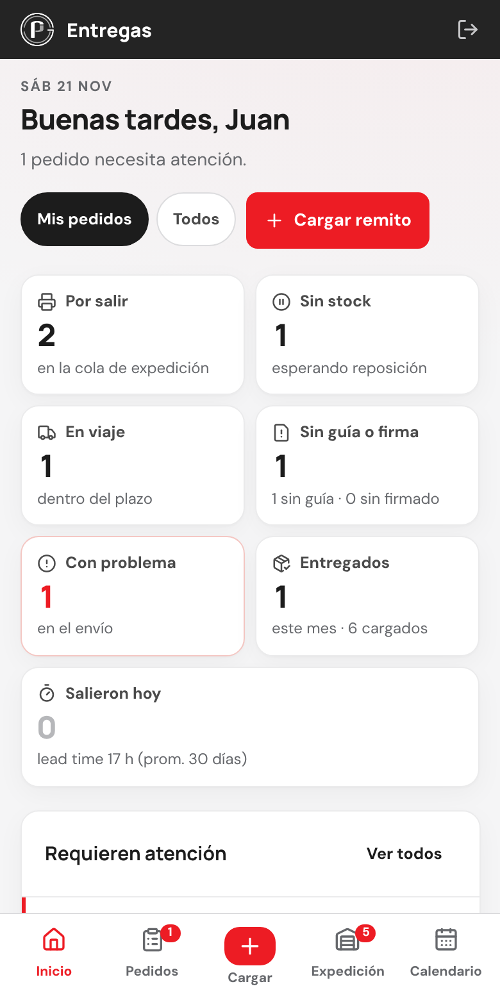
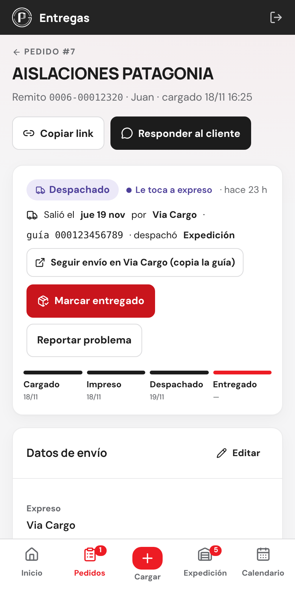

Grupo Poliplast
Grupo Poliplast
Dónde entrar
Desde el CRM: Menú → Ventas → Entregas. Es la misma app que también podés abrir sola.
Abrir el CRM Abrir Entregas sola (poli-entregas.vercel.app)Entrás con tu mail y contraseña del CRM. Si no te deja entrar, avisale a Felipe.
Fechas: prueba del martes 24/11 al domingo 30/11. Desde el lunes 01/12 es obligatorio en los dos depósitos (Villa Domínico y Mar del Plata).
En esta guía
1 El inicio
Al entrar ves tus pedidos agrupados: por salir, sin stock, en viaje, sin guía o firma, con problema y entregados. Tocá cualquier cuadro para ver cuáles son.
- «Mis pedidos» muestra los tuyos; «Todos», los de todo el equipo.
- Abajo están las Novedades: cuando expedición imprime, despacha, sube la guía o el remito firmado, te aparece acá.

2 Cargar un remito
Cuando hacés una venta que sale por expreso o la retira el cliente:
- Tocá Cargar remito y subí el PDF del remito de Contabilium (también acepta una foto). Podés subir varios juntos.
- Los datos del cliente se completan solos. Revisá que estén bien, sobre todo teléfono y dirección.
- Elegí por dónde va (expreso o «Retira el cliente») y desde qué depósito sale.
- Guardá. Expedición lo ve en el momento: no hace falta avisar por el grupo.

3 Seguir tus pedidos
En Pedidos ves cada uno con su estado: Cargado → Impreso → Despachado → Entregado (o Frenado / Con problema, con el motivo).
- Guía lista ya tiene número de guía o la foto de la guía.
- Firmado ya tiene el remito firmado.
- A la derecha dice a quién le toca: vendedor, expedición o expreso.
- Arriba podés buscar por cliente, remito o guía y filtrar por fecha.

4 El detalle del pedido
Tocá un pedido para ver todo: cuándo salió, por qué expreso, el número de guía con el link para seguirlo, quién lo despachó y desde qué depósito, y el historial completo.
- Copiar link: para pasarle el pedido a un compañero.
- En Historial y comentarios escribís una consulta para expedición: reemplaza el ida y vuelta del grupo.
- En Archivos están el remito, la guía y el remito firmado.

5 Avisarle al cliente con la guía
Cuando el pedido sale, aparece «Ya salió: avisale al cliente». Tocá Preparar mensaje:
- El mensaje ya viene armado con el expreso, el número de guía, los bultos y el link de seguimiento. Lo podés editar.
- Enviar por WhatsApp abre el chat del cliente con el texto.
- Mail abre tu correo con asunto y texto.
- Compartir con la guía (en el celular): elegís WhatsApp o mail y va con la foto de la guía adjunta.


6 Firma digital del remito
Si el cliente retira o recibe y no hay papel a mano, se puede firmar en el celular (lo usa sobre todo expedición, pero también podés hacerlo vos):
- En el pedido, Archivos → Firmar el remito en el celular.
- El cliente firma con el dedo y se cargan su nombre y DNI.
- Ver cómo queda muestra el remito con la firma puesta sobre «Recibí conforme», con la fecha, la aclaración y el DNI. Después, Guardar.
- Imprimir sigue siendo opcional: si el transporte pide papel, se imprime como siempre.

? Preguntas frecuentes
¿Tengo que seguir avisando por el grupo de WhatsApp?No. Al cargar el remito, expedición ya lo ve. Si hay algo especial, escribilo en el comentario del pedido.
¿Cómo sé si ya salió?En Pedidos dice «Despachado» con la fecha, y si aparece Guía lista ya podés mandarle la guía al cliente.
Un pedido está «Frenado», ¿qué hago?Mirá el motivo (sin stock, falta pago, datos incompletos). Si dice que te toca a vos, resolvelo y avisá en el comentario.
Me equivoqué en un dato.En el detalle, Datos de envío → Editar.
Algo no anda o veo algo raro.Mandale una captura a Felipe por WhatsApp.